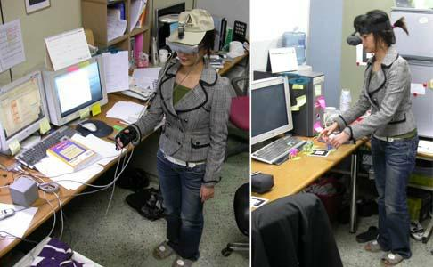
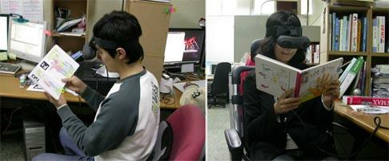
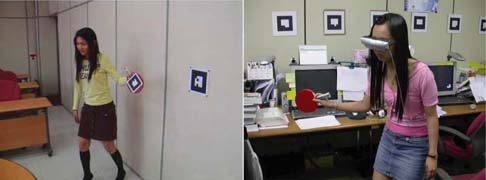
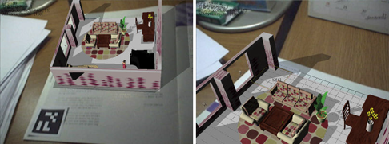
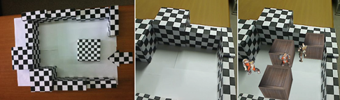

AR-Room: A Rapid Prototyping Framework for Augmented Reality Applications
AR-Room is a software framework for fast prototyping of a variety of augmented reality applications. AR-Room consists of a lot of deployable components for core augmented reality technologies, modules for hardware abstraction, and an authoring toolkit for the rapid content design.

» More information: AR-Room showcase.
AR Book - a tangible AR interface using a real book
An AR Book is a real book wherein one or several markers are attached or printed on each page. When a user watches a page of the AR Book, they can see superimposed virtual 3D contents on the real page. Users can interact with the virtual object using special marker sticks. They can also pick out and close up an interesting object, or watch details of the object by rotating it on their hands.

Augmented reality table tennis game
We developed an efficient development methodology for gesture-based augmented reality games through prototyping a table tennis game with a gesture interface. We also verified the applicability of the prototyping mechanism by implementing and demonstrating the augmented reality table tennis game played with real rackets wherein the implementation requires the real-time tracking of real rackets to allow fast movements and interactions without delay.

Design of Authoring Tool for Interactive Augmented Reality Game Space
The implementation of an augmented reality game suffers from the weak support of existing editing tools for augmented reality natures. This research proposes a 3D space authoring tools specialized to interactive augmented reality games. First, a game designer prepares 3D models using classical 3D authoring tools. Then the augmented reality authoring tool loads the 3D models and groups them into component parts. A group of 3D models corresponds to a logical component of the augmented space. Attributes of a group are edited in a convenient way using the authoring tool. A game designer places each group of models in a proper position and sets the group properties. Each group can be dynamic and interactive and have a scenario. A scenario consists of a set of states and a set of state transitions. State transitions are caused by position movements, collisions, elapsed time, or appearance of markers. The designer can visualize the current game space during the authoring process and can save the contents to a single file when the editing is completed. The saved space file is loaded by an augmented reality game as an interactive game space. The proposed authoring tool supports game designers to make various interactive augmented spaces in a fast and convenient way.

Construction of 3D Space using PTAM and its Game Applications
This research proposes a 3D space construction method based on PTAM for the purpose of augmented reality game applications. The PTAM algorithm constructs a 3D map from point features and expands the map during tracking. Our proposed method constructs an augmented reality game environment using the map. First, the maximum freely movable space is found from the point cloud of the map to construct the augmented reality game environment. According to the predefined game scenario, our proposed method automatically constructs a game environment wherein the moving ranges of the player character and enemy characters are limited inside the maximum freely movable space. In the constructed spatial game environment the user plays the augmented reality game by moving his body or changing his view direction to control the player character.

Entertainment Computing Laboratory